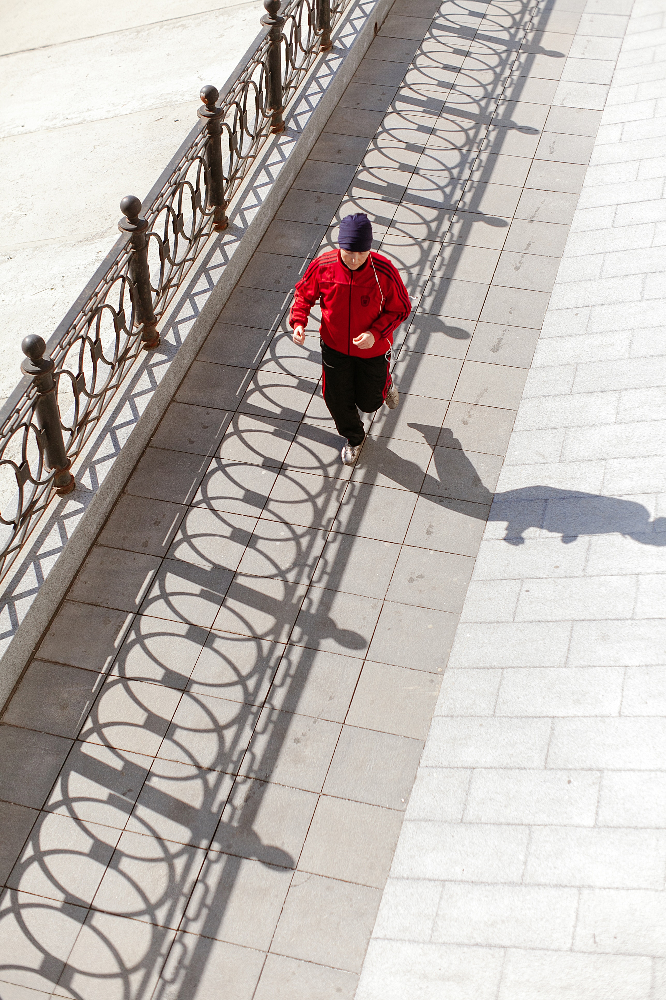

“¡El mundo es tu lienzo, y tú eres el pincel!”
Juntos logragremos el cambio
Comienza ya!Sobre nosotos
Brindamos ayuda a todas las personas que quieran llevar una vida saludable y sobre todo que les encantan las actividades al aire libre y salir a correr es una actividad saludable en la que las ganas y la voluntad de continuar son los principales elementos que se requiere para practicarla para llegar a alcanzar las metas que queremos.
Servicios que ofrecemos
Ofrecemos una variedad de servicios donde podras elegir a tu gusto y empezar a dibujar tu figura para un mejor desenvolvimeinto en el mundo del ejercicio
-

Corre con lápiz
Podras activar el modo “Run with Pencil” para ir formando la figura que tu quieras con respecto a todo el recorrdio que realices dentro de tu trayecto que te plasmaste
-

Corre sin lápiz
Podras cambiar en cualquier momento al modo “Run without Pencil”, con lo cual se sigue registrando su actividad física pero sin marcar el recorrido de manera que puedas disponer a gusto si tu recrrido no se dibuje de manera eficiente.
-

comparte tu figura
Podras optar por utilizar la opción “Share” para compartir una imagen del mapa con la figura formada en las cuentas de redes sociales que tenga asociadas (en este momento soporta Facebook, Twitter, WhatsApp e Instagram). Una vez que finaliza la sesión de running, la información de recorrido queda registrada por 24 horas, luego de lo cual se elimina
-

Guardar tu figura
También incluye la opción “Save Draft”, para guardar una sesión de recorrido y continuarla luego, así como registrar los datos de recorrido automáticamente en cuentas afiliadas del usuario para las aplicaciones Apple Health, Google Fit, Strava o Nike+.
-

Puntos cinéticos
el beneficio de los Kinetic Points, un sistema de acumulación de puntos en base a sus sesiones de running registradas en la app de manera que podras obtner servicios gratuitos mientras mas puntos acumules dentro de un dterminado dia
-

Sesión de carrera en equipo
El plan Plus (a un precio de suscripción mensual de US$ 4.99 o US$ 4.19 si se paga suscripción anual) permite además de lo ofrecido por el plan Free, mantener los mapas de recorrido de sesiones. También incluye la opción “Save Draft”, para guardar una sesión de recorrido y continuarla luego, así como registrar los datos de recorrido automáticamente en cuentas afiliadas del usuario para las aplicaciones Apple Health, Google Fit, Strava o Nike+.
Planes que ofrecemos
Ofrecemos una variedad de servicios donde podras elegir a tu gusto y empezar a dibujar tu figura para un mejor desenvolvimeinto en el mundo del ejercicio
-

Plan Free
El plan Free permite, al finalizar su recorrido, optar por utilizar la opción “Share” para compartir una imagen del mapa con la figura formada en las cuentas de redes sociales que tenga asociadas (en este momento soporta Facebook, Twitter, WhatsApp e Instagram). Una vez que finaliza la sesión de running, la información de recorrido queda registrada por 24 horas, luego de lo cual se elimina, quedando solo los valores de distancia recorrida y tiempo de sesión.
-

Plan Premium
El plan Plus (a un precio de suscripción mensual de US$ 4.99 o US$ 4.19 si se paga suscripción anual) permite además de lo ofrecido por el plan Free, mantener los mapas de recorrido de sesiones. También incluye la opción “Save Draft”, para guardar una sesión de recorrido y continuarla luego, así como registrar los datos de recorrido automáticamente en cuentas afiliadas del usuario para las aplicaciones Apple Health, Google Fit, Strava o Nike+.
-
Plan Negocio
el plan Business (a un precio de suscripción de US$ 49.99 mensual o US$ 41.99 si se paga suscripción anual). Para ellos se brinda la aplicación RunningArtist Business app. A través de esta aplicación, los negocios pueden incrementar sus ventas ofreciendo promociones de consumo dirigidas a los Runners, basadas en Kinetic Points, las cuales son visibles para los usuarios runners en la opción Offers de su aplicación. Los negocios también pueden plantear retos de figuras que los runners Página 3 de 8 deben formar con su recorrido.
Figuras destacadas por los usuarios
Contáctanos
Envianos un correo para poder contactar contigo de manera eficiente...